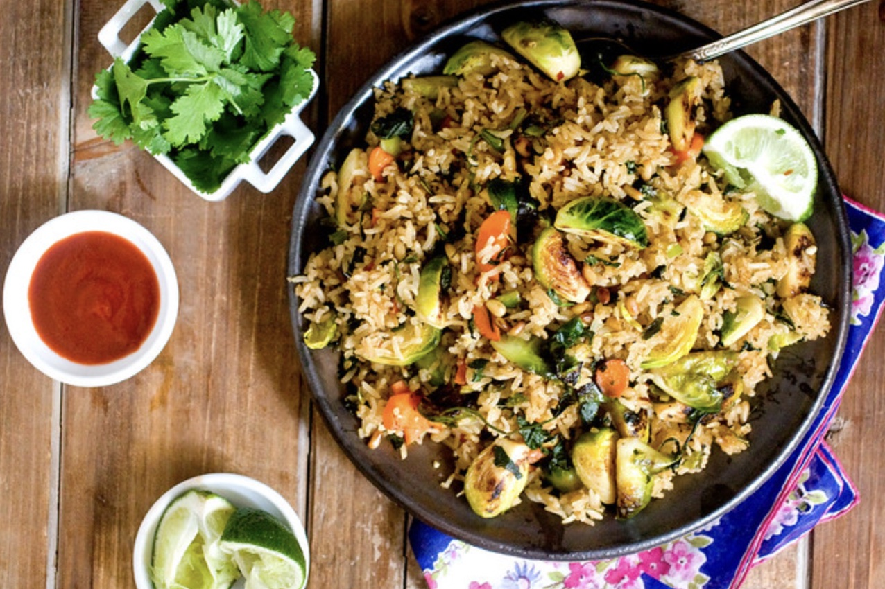

Chinese Brussels Sprouts

Chinese brussels are an easy and delicious recipe for a Friday night!
Ingredients
- 8 ounces Brussels Sprouts
- 1 head Cauliflower
- 1 Onion
- 1 cup Rice
- 3 Tbs Olive Oil
- 4 Tbs Pad Thai sauce
- Teriyaki sauce
- 3 Tbs Salt
- 1 Tbs Garlic
- 1 Tbs Paprika
- 1 Tbs Black Pepper
Steps
- Preheat Oven to 350
- Half Brussels Sprouts and cut Cauliflower into small pieces
- Slice onion into thin strips
- Put all vegtables on baking tray and drizzle with olive oil
- Add salt, garlic, paprika, and pepper and toss
- Add tray to oven for 30 minutes
- Bring water to boil, add rice, and reduce to simmer for 15 minutes
- Once browned remove vegtables from oven and toss with pad thai sauce and teriyaki
- Serve over rice